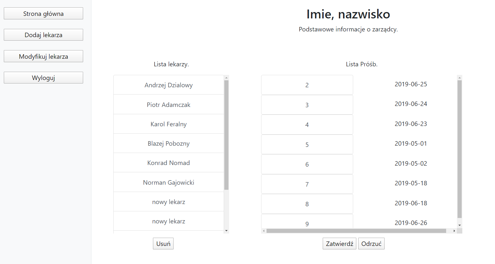

Clinic system project
GithubAbout project
This 2-man project's purpouse was to develop web application allowing clients to browse doctors' schedule and assign visits during free hours and dates.The Doctors were able to set schedule, take day offs and cancel hours. Additionaly project premise was to have an overseer of the clinic. Overseer was able to add/delete doctors' accounts and set their schedules.
 One of overseer's views.
One of overseer's views.
Project used spring and java as a backend and html/css/js for frontend. Thanks to AJAX getting schedules updated asynchronously was possible.
We've used the basic Xampp database for storage of records.
 Overseer's view.
 Clients' view.
Clients' view.